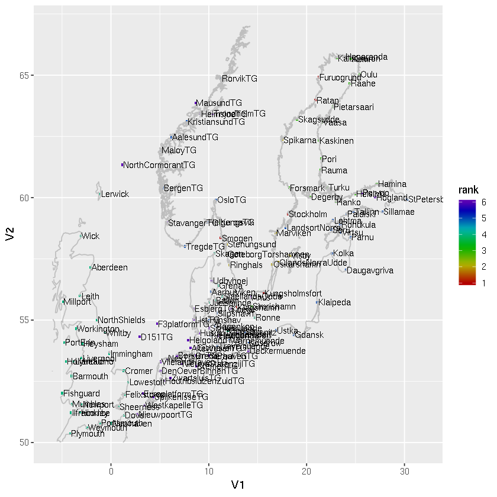

Finding stations with most data / longest time coverage
Contents
Finding stations with most data / longest time coverage¶
Here you will take high-resolution observations from EMODNET and pick the stations with the longest record. This is good if you want to know the best locations for model validation.
Getting the list of stations from the file names¶
We get the list of stations from the directory /data/sealevel/emodnet_hourly
setwd("/silos/notebook_collection/obsdata_gaugedata/find_stations/")
datadir = "/data/sealevel/emodnet_hourly"
filenames = system(paste0("ls -1 ",datadir),intern=TRUE)
filenames[1:5]
- 'EP_ERD_INT_SLEV_AL_TS_NRT_A121TG.nc'
- 'EP_ERD_INT_SLEV_AL_TS_NRT_A2TG.nc'
- 'EP_ERD_INT_SLEV_AL_TS_NRT_AalesundTG.nc'
- 'EP_ERD_INT_SLEV_AL_TS_NRT_Aarhus.nc'
- 'EP_ERD_INT_SLEV_AL_TS_NRT_Aberdeen.nc'
We need to extract the station name only
stationnames=filenames
for (i in seq_along(stationnames)) {
stationnames[i] = substr(stationnames[i],start=27,stop=nchar(stationnames[i])-3)
}
stationnames[1:5]
- 'A121TG'
- 'A2TG'
- 'AalesundTG'
- 'Aarhus'
- 'Aberdeen'
The next step is to go through the existing files and extract the length of the time axis and the latitude and longitude parameters. We will store this information in a data.frame.
library("RNetCDF") # package to load NetCDF data
gauge_stations = NULL
print(length(stationnames))
for (i in seq_along(filenames)) {
nc = open.nc(paste0(datadir,"/",filenames[i]))
timeaxis = var.get.nc(nc,"time")
#timeunit = att.get.nc(nc,"time","units")
lon = mean(var.get.nc(nc,"longitude"))
lat = mean(var.get.nc(nc,"latitude"))
min_time = min(timeaxis,na.rm=TRUE)
max_time = max(timeaxis,na.rm=TRUE)
min_year = as.numeric(format(as.POSIXct("1970-01-01")+min_time,"%Y"))
max_year = as.numeric(format(as.POSIXct("1970-01-01")+max_time,"%Y"))
# lon = var.get.nc(nc,"lon")
# lat = var.get.nc(nc,"lat")
# name = var.get.nc(nc,"station_name")
# country = var.get.nc(nc,"station_country")
mystation = data.frame(number=i, timesteps=length(timeaxis), name=stationnames[i], min_year=min_year, max_year=max_year, lon=lon, lat=lat)
gauge_stations = rbind(gauge_stations, mystation)
close.nc(nc)
}
gauge_stations = gauge_stations[order(gauge_stations$min_year),] # sort by first timestep
gauge_stations[1:20,] # show first lines
[1] 345
| number | timesteps | name | min_year | max_year | lon | lat | |
|---|---|---|---|---|---|---|---|
| 182 | 182 | 1173509 | Kungsholmsfort | 1901 | 2021 | 15.5894 | 56.1053 |
| 248 | 248 | 1135665 | Ratan | 1901 | 2021 | 20.8950 | 63.9861 |
| 289 | 289 | 1160374 | Stockholm | 1901 | 2021 | 18.0817 | 59.3242 |
| 281 | 281 | 969861 | Smogen | 1910 | 2021 | 11.2178 | 58.3536 |
| 72 | 72 | 920860 | Furuogrund | 1916 | 2021 | 21.2306 | 64.9158 |
| 165 | 165 | 779952 | Klagshamn | 1929 | 2021 | 12.8936 | 55.5222 |
| 229 | 229 | 531857 | Oskarshamn | 1960 | 2021 | 16.4781 | 57.2750 |
| 321 | 321 | 531904 | Visby | 1960 | 2021 | 18.2844 | 57.6392 |
| 224 | 224 | 494694 | OlandsNorraUdde | 1961 | 2021 | 17.0972 | 57.3661 |
| 288 | 288 | 488333 | Stenungsund | 1962 | 2021 | 11.8325 | 58.0933 |
| 206 | 206 | 480999 | Marviken | 1964 | 2019 | 16.8372 | 58.5536 |
| 81 | 81 | 469933 | GoteborgTorshamnen | 1967 | 2021 | 11.7906 | 57.6847 |
| 251 | 251 | 452592 | Ringhals | 1967 | 2021 | 12.1125 | 57.2497 |
| 285 | 285 | 460903 | Spikarna | 1968 | 2021 | 17.5311 | 62.3633 |
| 43 | 43 | 435324 | Degerby | 1971 | 2021 | 20.3848 | 60.0319 |
| 85 | 85 | 435324 | Hamina | 1971 | 2021 | 27.1792 | 60.5628 |
| 86 | 86 | 436063 | Hanko | 1971 | 2021 | 22.9766 | 59.8229 |
| 98 | 98 | 435319 | Helsinki | 1971 | 2021 | 24.9562 | 60.1536 |
| 156 | 156 | 435319 | Kaskinen | 1971 | 2021 | 21.2148 | 62.3440 |
| 160 | 160 | 436068 | Kemi | 1971 | 2021 | 24.5153 | 65.6729 |
Next step is to select the North Sea and Baltic Sea only.
lonrange=c(-5,31)
latrange=c(50,67)
gauge_stations = gauge_stations[gauge_stations$lat > latrange[1],]
gauge_stations = gauge_stations[gauge_stations$lat < latrange[2],]
gauge_stations = gauge_stations[gauge_stations$lon > lonrange[1],]
gauge_stations = gauge_stations[gauge_stations$lon < lonrange[2],]
head(gauge_stations)
| number | timesteps | name | min_year | max_year | lon | lat | |
|---|---|---|---|---|---|---|---|
| 182 | 182 | 1173509 | Kungsholmsfort | 1901 | 2021 | 15.5894 | 56.1053 |
| 248 | 248 | 1135665 | Ratan | 1901 | 2021 | 20.8950 | 63.9861 |
| 289 | 289 | 1160374 | Stockholm | 1901 | 2021 | 18.0817 | 59.3242 |
| 281 | 281 | 969861 | Smogen | 1910 | 2021 | 11.2178 | 58.3536 |
| 72 | 72 | 920860 | Furuogrund | 1916 | 2021 | 21.2306 | 64.9158 |
| 165 | 165 | 779952 | Klagshamn | 1929 | 2021 | 12.8936 | 55.5222 |
measurements_in_box = gauge_stations
measurements_in_box$rank = -1
myrank = 1
measurements_in_box$rank[(measurements_in_box$min_year < 1950) & (measurements_in_box$rank==-1)]=myrank
print(paste0("rank ",myrank,": ",sum(measurements_in_box$rank==myrank)," stations"))
for (i in seq_len(nrow(measurements_in_box))) {
if (measurements_in_box$rank[i] == myrank) {
for (j in seq_len(nrow(measurements_in_box))) {
if (measurements_in_box$rank[j] == -1) {
if (abs(measurements_in_box$lat[i]-measurements_in_box$lat[j]) < 0.3) {
if (abs(measurements_in_box$lon[i]-measurements_in_box$lon[j]) < 0.6) {
measurements_in_box$rank[j]=0
}
}
}
}
}
}
print(measurements_in_box[measurements_in_box$name=="Stockholm",])
[1] "rank 1: 6 stations"
number timesteps name min_year max_year lon lat rank
289 289 1160374 Stockholm 1901 2021 18.0817 59.3242 1
myrank = 2
measurements_in_box$rank[(measurements_in_box$min_year < 1970) & (measurements_in_box$rank==-1)]=myrank
print(paste0("rank ",myrank,": ",sum(measurements_in_box$rank==myrank)," stations"))
for (i in seq_len(nrow(measurements_in_box))) {
if (measurements_in_box$rank[i] == myrank) {
for (j in seq_len(nrow(measurements_in_box))) {
if (measurements_in_box$rank[j] == -1) {
if (abs(measurements_in_box$lat[i]-measurements_in_box$lat[j]) < 0.3) {
if (abs(measurements_in_box$lon[i]-measurements_in_box$lon[j]) < 0.6) {
measurements_in_box$rank[j]=0
}
}
}
}
}
}
[1] "rank 2: 8 stations"
myrank = 3
measurements_in_box$rank[(measurements_in_box$min_year < 1990) & (measurements_in_box$rank==-1)]=myrank
print(paste0("rank ",myrank,": ",sum(measurements_in_box$rank==myrank)," stations"))
for (i in seq_len(nrow(measurements_in_box))) {
if (measurements_in_box$rank[i] == myrank) {
for (j in seq_len(nrow(measurements_in_box))) {
if (measurements_in_box$rank[j] == -1) {
if (abs(measurements_in_box$lat[i]-measurements_in_box$lat[j]) < 0.3) {
if (abs(measurements_in_box$lon[i]-measurements_in_box$lon[j]) < 0.6) {
measurements_in_box$rank[j]=0
}
}
}
}
}
}
[1] "rank 3: 19 stations"
myrank = 4
measurements_in_box$rank[(measurements_in_box$min_year < 2000) & (measurements_in_box$rank==-1)]=myrank
print(paste0("rank ",myrank,": ",sum(measurements_in_box$rank==myrank)," stations"))
for (i in seq_len(nrow(measurements_in_box))) {
if (measurements_in_box$rank[i] == myrank) {
for (j in seq_len(nrow(measurements_in_box))) {
if (measurements_in_box$rank[j] == -1) {
if (abs(measurements_in_box$lat[i]-measurements_in_box$lat[j]) < 0.3) {
if (abs(measurements_in_box$lon[i]-measurements_in_box$lon[j]) < 0.6) {
measurements_in_box$rank[j]=0
}
}
}
}
}
}
[1] "rank 4: 40 stations"
myrank = 5
measurements_in_box$rank[(measurements_in_box$min_year < 2010) & (measurements_in_box$rank==-1)]=myrank
print(paste0("rank ",myrank,": ",sum(measurements_in_box$rank==myrank)," stations"))
for (i in seq_len(nrow(measurements_in_box))) {
if (measurements_in_box$rank[i] == myrank) {
for (j in seq_len(nrow(measurements_in_box))) {
if (measurements_in_box$rank[j] == -1) {
if (abs(measurements_in_box$lat[i]-measurements_in_box$lat[j]) < 0.3) {
if (abs(measurements_in_box$lon[i]-measurements_in_box$lon[j]) < 0.6) {
measurements_in_box$rank[j]=0
}
}
}
}
}
}
[1] "rank 5: 34 stations"
myrank = 6
measurements_in_box$rank[(measurements_in_box$min_year < 2015) & (measurements_in_box$rank==-1)]=myrank
print(paste0("rank ",myrank,": ",sum(measurements_in_box$rank==myrank)," stations"))
for (i in seq_len(nrow(measurements_in_box))) {
if (measurements_in_box$rank[i] == myrank) {
for (j in seq_len(nrow(measurements_in_box))) {
if (measurements_in_box$rank[j] == -1) {
if (abs(measurements_in_box$lat[i]-measurements_in_box$lat[j]) < 0.3) {
if (abs(measurements_in_box$lon[i]-measurements_in_box$lon[j]) < 0.6) {
measurements_in_box$rank[j]=0
}
}
}
}
}
}
[1] "rank 6: 90 stations"
stations_to_keep = c("CuxhavenTG")
for (i in seq_len(nrow(measurements_in_box))) {
if (measurements_in_box$rank[i] > 0) {
for (j in seq(from=i+1,to=nrow(measurements_in_box))) {
if (measurements_in_box$rank[j] > 0) {
if (abs(measurements_in_box$lat[i]-measurements_in_box$lat[j]) < 0.3) {
if (abs(measurements_in_box$lon[i]-measurements_in_box$lon[j]) < 0.6) {
if (measurements_in_box$timesteps[i] > measurements_in_box$timesteps[j]) {
if ((measurements_in_box$name[j] %in% stations_to_keep)==FALSE) {
measurements_in_box$rank[j] = -1
}
} else {
if ((measurements_in_box$name[i] %in% stations_to_keep)==FALSE) {
measurements_in_box$rank[i] = -1
}
}
}
}
}
}
}
}
print(paste0("remaining: ",sum(measurements_in_box$rank>0)," stations"))
[1] "remaining: 138 stations"
Let us plot where these boxes are.
boxes_to_plot = measurements_in_box[measurements_in_box$rank>0,]
boxes_to_plot$xmin = boxes_to_plot$lon-0.1
boxes_to_plot$xmax = boxes_to_plot$lon+0.1
boxes_to_plot$ymin = boxes_to_plot$lat-0.05
boxes_to_plot$ymax = boxes_to_plot$lat+0.05
coastline=read.csv("coastline_world.txt",sep="",header=FALSE)
coastline_baltic=read.csv("coastline_baltic.txt",sep="",header=FALSE)
library(ggplot2)
myplot = ggplot()+
geom_rect(data=boxes_to_plot,mapping=aes(xmin=xmin,xmax=xmax,ymin=ymin,ymax=ymax,fill=rank))+
scale_fill_gradientn(colors=rainbow(100,end = 0.75,v=0.7))+
geom_path(data=coastline[coastline$V1<0,],mapping=aes(x=V1,y=V2),color="gray")+
geom_path(data=coastline_baltic,mapping=aes(x=V1,y=V2),color="gray")+
geom_text(data=boxes_to_plot,mapping=aes(x=xmax,y=lat,label=name),hjust="left",size=3)+
scale_x_continuous(limits = c(-6,32))+
scale_y_continuous(limits = latrange)
print(myplot)
png("gauge_stations.png",width=1600,height=1080,units="px",res=96)
print(myplot)
dev.off()
Warning message:
"Removed 26579 rows containing missing values (geom_path)."Warning message:
"Removed 9347 rows containing missing values (geom_path)."Warning message:
"Removed 26579 rows containing missing values (geom_path)."Warning message:
"Removed 9347 rows containing missing values (geom_path)."
png: 2

We save the station list to a csv file
write.table(boxes_to_plot[,c("name","lat","lon","rank","min_year","max_year","timesteps")],"gauge_stations.csv",col.names=TRUE,row.names=FALSE,sep=";",quote=FALSE)